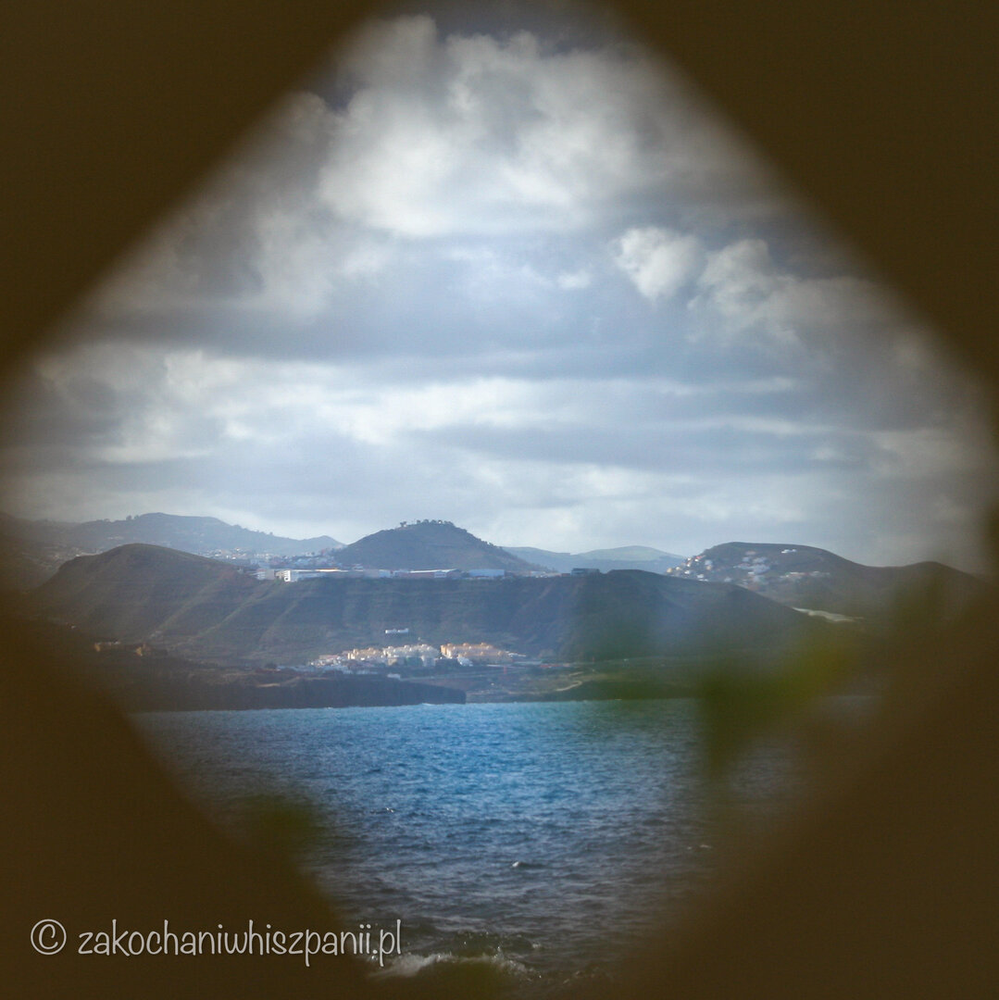
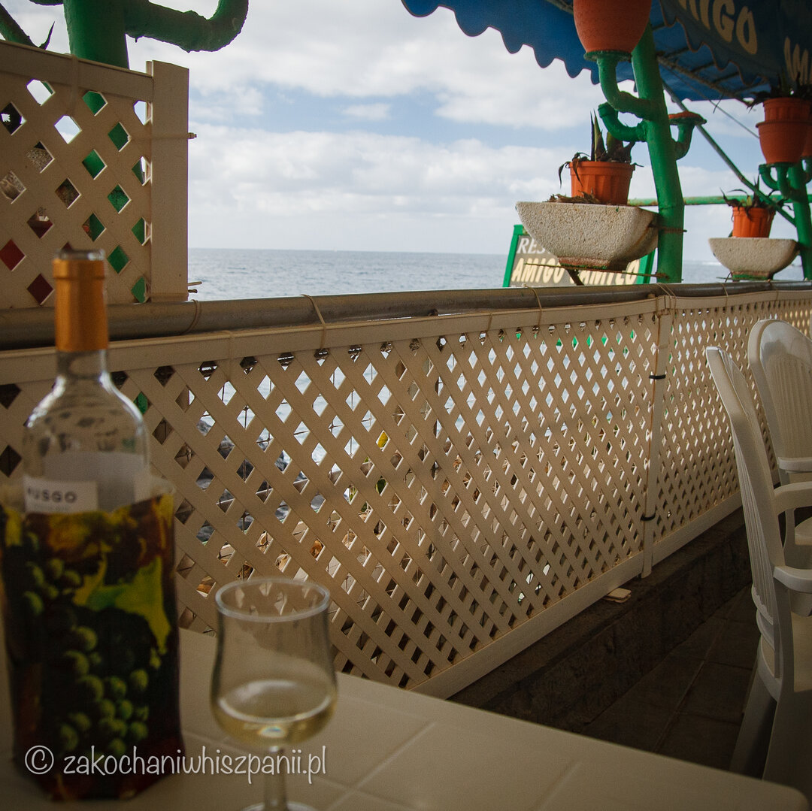
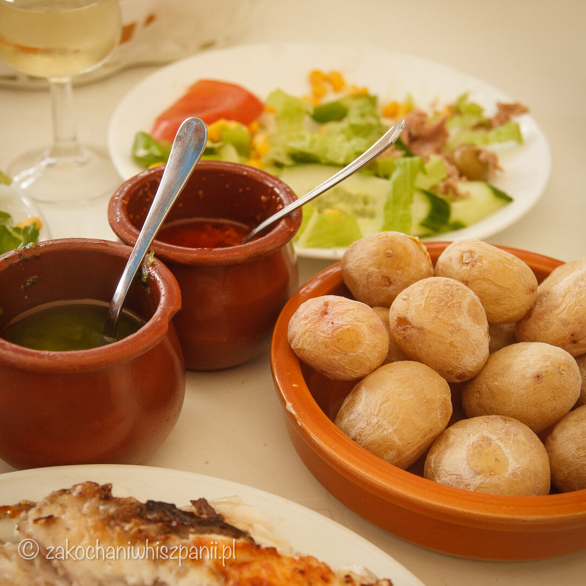

Restauracja Amigo Camilo Las Palmas
Gdzie zjeść na Gran Canarii?
Dzisiejszym wpisem rozpoczynamy nowy cykl na naszym blogu, Gdzie zjeść na Wyspach Kanaryjskich? Chcąc spróbować lokalnych przysmaków kuchni kanaryjskiej, możesz wyruszyć w podróż z Polski na Gran Canarię samolotem z przesiadkami lub bezpośrednim czarterowym lotem z biurem podróży np. Itaka, TUI.
Dla tych, którzy lubią sami organizować swoje podróże, mamy dobrą wiadomość - od kwietnia 2022 będą również bezpośrednie loty z Krakowa na lotnisko w Las Palmas.
Gdzie zjeść smaczne ryby i owoce morza w Las Palmas?
Będąc w Las Palmas, musisz odwiedzić restaurację Amigo Camilo. Miejscowi i turyści mówią o niej, że jest najlepszym lokalem, w którym serwowane są świeże ryby i owoce morza. Jesteś smakoszem ryb i owoców morza? Koniecznie odwiedź tę restaurację!

Restauracja Amigo Camilo w Las Palmas — lokalizacja
Gdy będziesz już zmęczona/y plażowaniem na Playa de las Canteras, możesz udać się na spacer po promenadzie Paseo de las Canteras i zatrzymać w polecanej przez nas restauracji Amigo Camilo. Lokal ten, znajduje się przy Calle Caleta 1. Jeśli będziesz pod tym adresem, uprzedzamy, nie przestrasz się!!!

Restauracja na pierwszy rzut oka nie wygląda najpiękniej. W środku białe, plastikowe stoliki i krzesła, trochę tandetnie, dekoracje w stylu rybackim, jednak bezpośredni widoki na ocean oraz smaczne potrawy, rekompensują wystrój. W dni kiedy ruch jest większy w restauracji, należy pobrać wcześniej bilecik i oczekiwać na swoją kolej.
Restauracja Amigo Camilo w Las Palmas - menu
Typowa kuchnia kanaryjska bazuje na owocach morza i daniach rybnych. Specjalnością Wysp Kanaryjskich są również ziemniaki papas arrugadas. To gotowane ze skórką ziemniaki podane z sosem mojo rojo lub mojo verde.

Właśnie takie smakołyki podają w restauracji Amigo Camilo. Codziennie serwują tu świeże ryby i owoce morza np. kalmary, sardynki, ośmiornice, krewetki. Miłe jest to, że po zajęciu stolika, obsługa zabiera Cię do lady z rybami i pokazujesz te, które chcesz, by dla Ciebie przygotowali.
Zamówiliśmy ryby, wybraliśmy również sałatkę, ensalada mixta (cebula, sałata, papryka, ogórek, szparagi, tuńczyk, oliwki, pomidor i kukurydza) oraz papas arrugadas. Jeśli nie lubisz ziemniaków w takiej wersji, możesz zamówić frytki. Do dań rybnych dobraliśmy butelkę białego wina Musgo Rueda Verdejo. W takim lokalu z tak dobrą kuchnią nie pozostaje nic innego jak cieszyć się smakiem oraz przepięknym krajobrazem za oknem.

Naszym zdaniem restauracja Amigo Camilo to fantastyczne miejsce z dobrym jedzeniem, sprawną obsługą, przystępną ceną i pięknym widokiem na ocean.
Najnowsze wpisy


Tagi